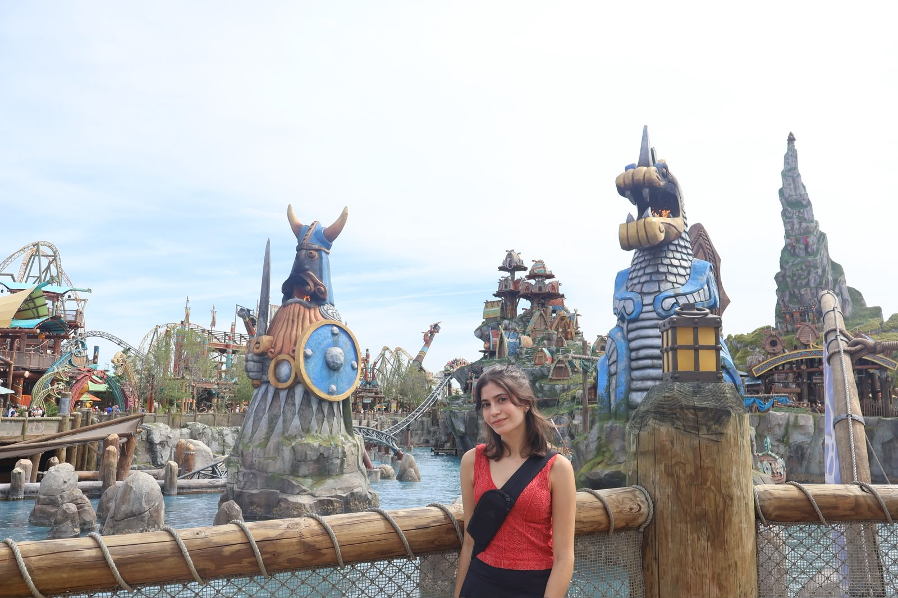
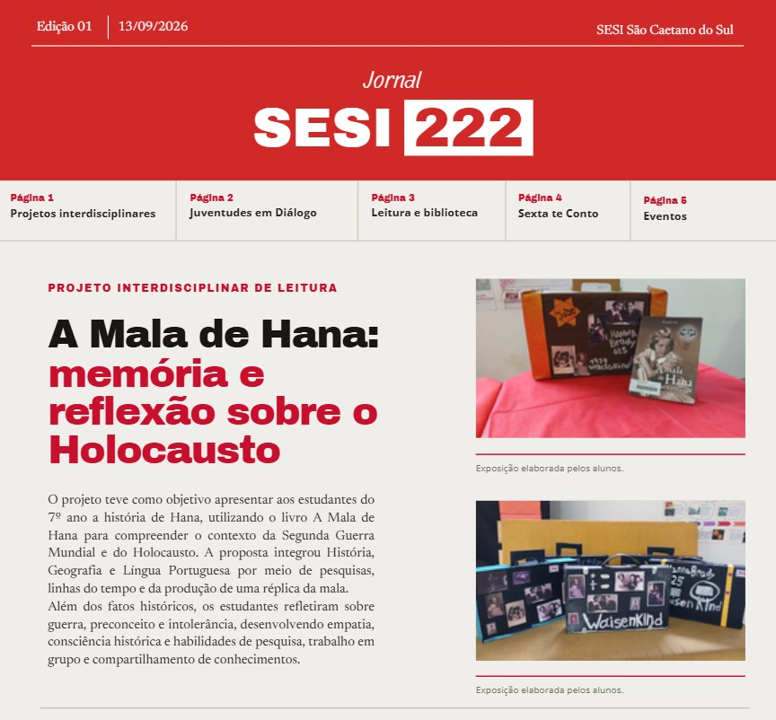
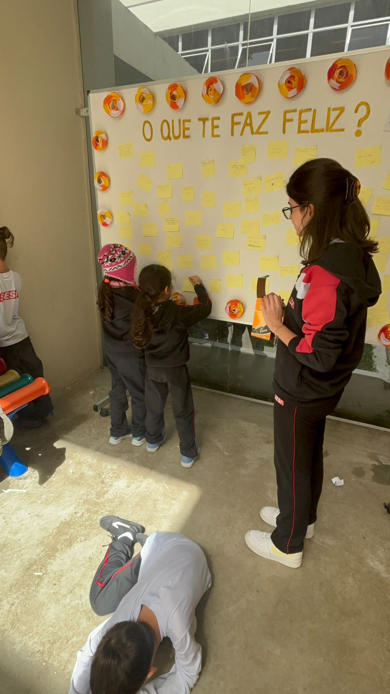

Técnico em Desenvolvimento de Sistemas
SENAI São Caetano do Sul
Desenvolvimento de sistemas
São Caetano do Sul, SPDesenvolvo aplicações web e participo de projetos de educação, comunicação e voluntariado.

Minha curiosidade me leva a buscar novos conhecimentos e, principalmente, a entender como eles podem ser transformados em algo concreto. Gosto de pensar em soluções criativas para problemas reais, especialmente quando podem facilitar a vida, ajudar alguém ou transformar uma realidade.
Encontro nos projetos um espaço para colocar essa vontade em prática. Ao desenvolver projetos de sistemas e aplicações web, transformo o que aprendo em experiências concretas, testando ideias, enfrentando desafios e descobrindo novas formas de solucionar problemas.
Essa busca por aprender e criar também ultrapassa a tecnologia. Por meio de projetos extracurriculares e experiências escolares, tenho contato com diferentes pessoas, ideias e realidades, o que alimenta minha vontade de continuar aprendendo e usar aquilo que aprendo para contribuir com as pessoas ao meu redor.
SENAI São Caetano do Sul
Uma coleção das soluções que desenvolvi, combinando tecnologia, design intuitivo e estrutura moderna. Clique em qualquer card para explorar os detalhes.
Educação, comunicação e voluntariado
01/2026 — Presente
Educação · Voluntariado
Professora voluntária de ensino sociocultural
Dou aulas online quinzenais de atualidades, pensamento crítico e projeto de vida para estudantes de escolas públicas.

Preparo materiais, corrijo atividades e acompanho os alunos. Também participei do planejamento do workshop Construindo Sonhos.
10/2025 — Presente
Comunicação · Direitos humanos
Diretora de Jornalismo Correspondente e redatora
Pesquiso temas como desigualdade educacional, migração e direitos humanos para produzir textos e vídeos.

Como diretora de Jornalismo Correspondente, distribuo pautas, acompanho prazos e reviso o trabalho da equipe.
07/2025 — Presente
Comunicação · Iniciativa estudantil
Idealizadora, fundadora e designer editorial
Idealizei e fundei o Jornal SESI 222 com apoio da biblioteca. A primeira edição foi distribuída em 2026.

Selecionei pautas, escrevi matérias e fiz o design editorial, com revisão das professoras e colaboração da comunidade escolar.
07/2025 — 12/2025
Acolhimento · Voluntariado
Voluntária no berçário e apoio à organização
Cuidei de bebês enquanto seus responsáveis, imigrantes, frequentavam aulas de português na UFABC.

Preparei atividades e álbuns de recordação para as famílias. Em 2026, também ajudei na organização das inscrições.
07/2025 — 12/2025
Educação · Ação comunitária
Integrante e facilitadora de dinâmicas
Participei de ações sobre resíduos, convivência e saúde mental com um grupo de cinco estudantes.

Criei materiais visuais, contribuí para exposições e facilitei conversas e dinâmicas com turmas do Ensino Fundamental.
Conquistas em leitura, escrita e formação acadêmica.